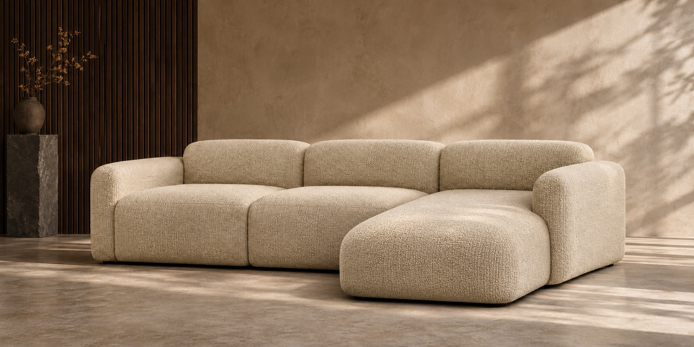
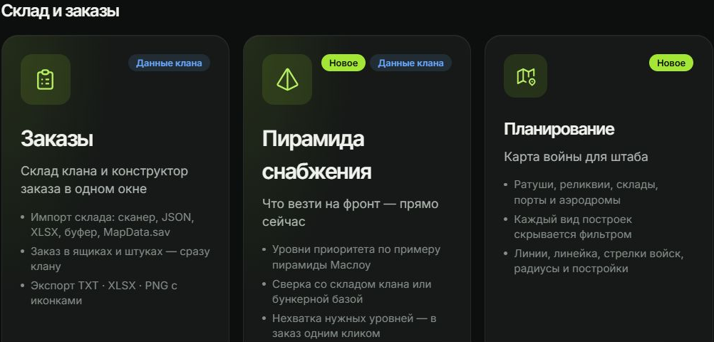

Сайт для мебельной студии
Посмотрите, как покупатель может настроить диван прямо на странице.
Дизайн и веб-разработка
От первой схемы до работающего продукта. Продумываем интерфейс, разрабатываем серверную часть и связываем всё, что нужно бизнесу.
Демонстрация двух компоновок модульного дивана. Управление расположено над экраном.
01 / Услуги
Фронтенд, серверная часть и интеграции в рамках одного проекта. Можно начать с идеи или готового дизайна.
Сайт, на котором понятно, чем занимается компания, что она предлагает и как с ней связаться.
Продукт со своей логикой: личный кабинет, внутренний инструмент или онлайн-сервис.
Новые задачи для уже работающего сайта: от отдельной страницы до изменения архитектуры.
02 / Портфолио
Конфигуратор модульного дивана и веб-приложение для управления игровым сообществом.

Посмотрите, как покупатель может настроить диван прямо на странице.

Логистика игрового клана: заявки, снабжение, производственные расчёты и карта планирования.
Next.js / FastAPI / PostgreSQL
03 / Процесс
До начала работ согласуем объём, сроки и стоимость. Результат показываем по этапам.
Обсудить проектУточняем, для кого сайт, что он должен делать и какие материалы уже есть.
Результат / общее понимание задачиЗаписываем объём работ, этапы, сроки и стоимость. Определяем порядок согласований.
Результат / план и стоимостьПродумываем страницы, содержание, пользовательские сценарии и необходимые функции.
Результат / основа проектаСоздаём интерфейс и серверную часть. Связываем компоненты и показываем промежуточный результат.
Результат / работающий сайтПроверяем основные сценарии, мобильную версию и формы. Публикуем сайт и передаём доступы.
Результат / запуск и передача04 / Подход
Интерфейс, данные, формы и интеграции — части одного продукта. Их важно проектировать вместе.
Так проще поддерживать сайт, добавлять функции и развивать его после запуска. Можно прийти с готовым макетом или обсудить техническую часть проекта.
05 / Вопросы
Зависит от структуры, контента и функций. После короткого разговора опишем объём, этапы и стоимость до начала работ.
Срок зависит от состава проекта и скорости согласований. Назовём график после того, как поймём задачу.
Да. Встречи и согласования можно проводить онлайн. Формат связи обсудим до начала работы.
Да. Можем подключиться к готовому дизайну, существующему продукту или отдельной технической задаче.
Передадим доступы и документацию. Если понадобится, продолжим поддерживать и развивать сайт.
Обсудим вашу задачу
Опишите задачу в нескольких предложениях. Ответим по составу и этапам работы.